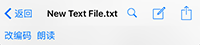
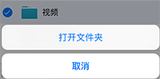
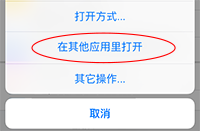
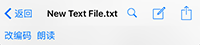
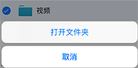
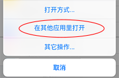

文档管理
- 支持浏览iOS系统支持的文件，如JPG文件、MOV文件、PDF文件、Office系列、以及iWork系列文件 （可能需要压缩成zip格式如“文档.pages.zip” ）。还支持浏览RM, RMVB, MKV, FLV, AVI, WMV, OGV, 和 3GP等系统并不自带支持的视频文件。
- 支持浏览、朗读、搜索、编辑文本文件。文本文件过大时（>50KB）请在文件上长按然后在弹出菜单里选择用只读方式打开。

- 支持一般文件操作如复制、粘贴、重命名、删除、剪切、和压缩，暂不支持查找。请先点“编辑”进入编辑模式然后选择要操作的文件，然后点击不同文件操作按钮即可进行文件操作。支持在单个文件上向左扫删除。

- 编辑模式下长按文件夹并点击相应菜单可进入该文件夹（方便进行文件的复制粘贴操作）。

- 可以通过以下方式刷新当前浏览文件夹的文件列表：下拉当前列表内容至一定程度后松开、长按标题栏并点击刷新菜单、点击标题栏上刷新按钮（只在iPad上支持）。
- 如果侧边栏在打开文件后是可见的，可以在标题栏或者工具栏上左划以隐藏，以可以在更大的空间里浏览文件。
- 与同一设备的其它App间传递文件。在其他App比如Dropbox或Box里，当你选中一个文件时，通常会有一个打开方式选项，在弹出的App列表中可以看到加密盘App，点击后即导入该文件到了本App中。导出文件到其他App则可在一个文件（加密盘外）上长按调出菜单并选择“在其他应用里打开”，然后可以看到有一系列可以处理该文件的App列出，选择相应App即可。

- 支持浏览Documents以外的、系统允许访问的目录（如tmp目录，缓存目录）。先在设置中解除锁定在Documents目录，即会改变可浏览的顶层目录。自1.6版起，临时拷贝出来的文件存储在 程序根目录/tmp/ 下（之前存储在 程序根目录/Library/Caches/ 下）。特别地，程序根目录/Library/Caches/下名为Management的几个文件是本应用的浏览历史文件，因此如需保留浏览历史请保留它们。
- 支持浏览、朗读、搜索、编辑文本文件。文本文件过大时（>50KB）请在文件上长按然后在弹出菜单里选择用只读方式打开。

- 支持一般文件操作如复制、粘贴、重命名、删除、剪切、和压缩，暂不支持查找。请先点“编辑”进入编辑模式然后选择要操作的文件，然后点击不同文件操作按钮即可进行文件操作。支持在单个文件上向左扫删除。
- 编辑模式下长按文件夹并点击相应菜单可进入该文件夹（方便进行文件的复制粘贴操作）。

- 可以通过以下方式刷新当前浏览文件夹的文件列表：下拉当前列表内容至一定程度后松开、长按标题栏并点击刷新菜单、点击标题栏上刷新按钮（只在iPad上支持）。
- 如果侧边栏在打开文件后是可见的，可以在标题栏或者工具栏上左划以隐藏，以可以在更大的空间里浏览文件。
- 与同一设备的其它App间传递文件。在其他App比如Dropbox或Box里，当你选中一个文件时，通常会有一个打开方式选项，在弹出的App列表中可以看到加密盘App，点击后即导入该文件到了本App中。导出文件到其他App则可在一个文件（加密盘外）上长按调出菜单并选择“在其他应用里打开”，然后可以看到有一系列可以处理该文件的App列出，选择相应App即可。

- 支持浏览Documents以外的、系统允许访问的目录（如tmp目录，缓存目录）。先在设置中解除锁定在Documents目录，即会改变可浏览的顶层目录。自1.6版起，临时拷贝出来的文件存储在 程序根目录/tmp/ 下（之前存储在 程序根目录/Library/Caches/ 下）。特别地，程序根目录/Library/Caches/下名为Management的几个文件是本应用的浏览历史文件，因此如需保留浏览历史请保留它们。